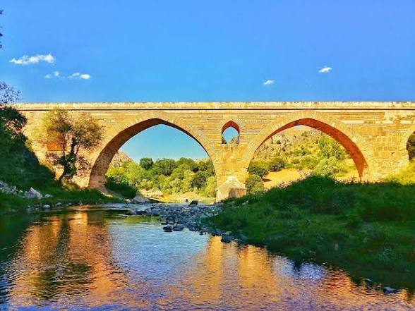

TARİHÎ MİRAS
Kurt Köprü
Kurt Köprü, taş kemerli mimarisiyle ilçenin geçmişteki ulaşım ve geçiş yollarını hatırlatan tarihî eserlerindendir. Köprü, geleneksel taş işçiliği ve dere üzerindeki konumuyla kültürel miras açısından önem taşır.